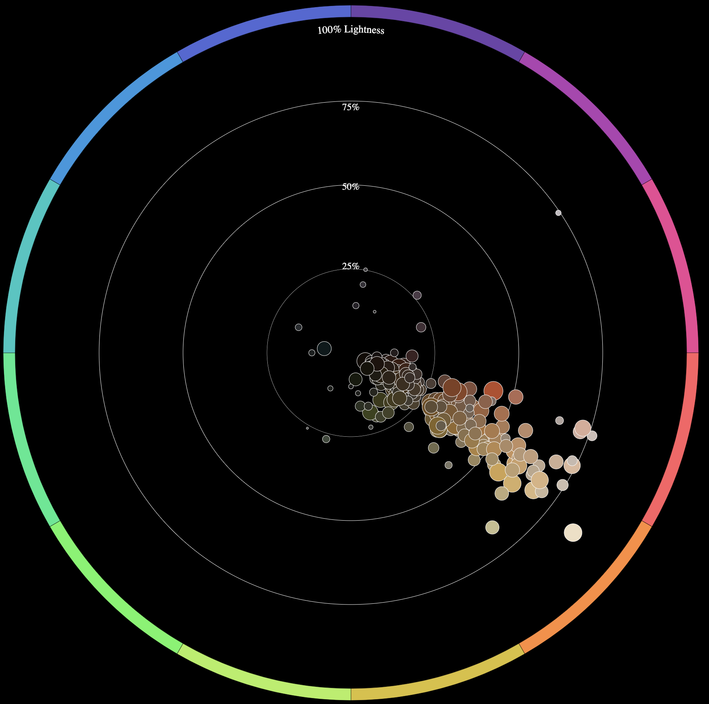

Medieval Gothic : Rise of Red

Red pigment was among the first used in Europe (brought from Asia through trade). Brown, orange, and red colors were common. (1200-1430).
1290
1365
1420
1343
Renaissance: Getting Greener
During the Renaissance period, oil painting was established allowing artists more innovation in painting techniques, and as a consequence, subject matter. We see a burst in number of paintings and first signs green. However, it is not frequently used and red still remains the predominant pigment. (1430-1550)
1469
1515
1526
1536
Rococo and Romanticism: All About Nature
Entering artistic movements with a focus on nature (ex: Rococo and Romanticism), we see a rise in the use of the green pigment and a lot of creamy green colors. Red continues to overpower because it remains the cheapest and most accessible pigment.(1705-1750) & (1805-1850)
1735, Rococo
1730, Rococo
1842, Romanticism
1818, Romanticism
Modern Art: Blue is the Warmest Color
Although there were signs of blue early on, it only became popular in the 18th century because with increasing technology, it became less expensive.(1890-1920)
1900
1902
1899
1903